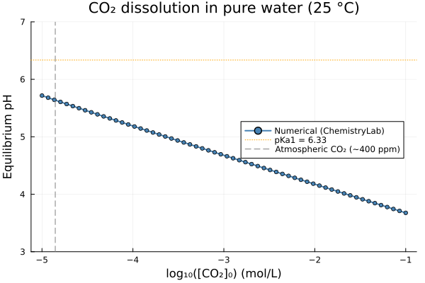
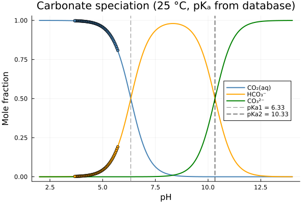

CO₂ Dissolution and the Carbonate System
The carbonate system — CO₂(aq) / HCO₃⁻ / CO₃²⁻ — is one of the most important chemical equilibria in natural water chemistry, geochemistry, and environmental science. It controls the pH of rainwater, rivers, oceans, and aquifers, and governs the dissolution and precipitation of carbonate minerals such as calcite and dolomite.
This example shows how to:
- Load species from a thermodynamic database and build a
ChemicalSystem. - Extract dissociation constants (pKₐ₁, pKₐ₂) directly from standard Gibbs energies.
- Simulate CO₂ dissolution in pure water over several orders of magnitude.
- Construct the analytical speciation diagram (fraction of each carbonate species vs pH).
System setup
All species are loaded from the SLOP98 inorganic database. The system contains only H, O, C and charge-bearing species; no other elements are needed.
| Symbol | Species | Phase |
|---|---|---|
H2O@ | H₂O — water | aqueous solvent |
H+ | H⁺ — proton | aqueous solute |
OH- | OH⁻ — hydroxide | aqueous solute |
CO2@ | CO₂(aq) — dissolved CO₂ | aqueous solute |
HCO3- | HCO₃⁻ — bicarbonate | aqueous solute |
CO3-2 | CO₃²⁻ — carbonate | aqueous solute |
The three primary species H2O@, H+, CO3-2 form a basis for the whole system: every other aqueous species is a linear combination of these three.
using ChemistryLab
using DynamicQuantities
substances = build_species("../../../data/slop98-inorganic-thermofun.json")
# Select only the six carbonate-system species
dict = Dict(symbol(s) => s for s in substances)
species = [dict[sym] for sym in split("H2O@ H+ OH- CO2@ HCO3- CO3-2")]
cs = ChemicalSystem(species, ["H2O@", "H+", "CO3-2"])6-element ChemicalSystem{Species{Int64}, AbstractReaction, StoichMatrix{Int64, Symbol, Vector{Symbol}, Matrix{Int64}, Species{Int64}}, StoichMatrix{Int64, Species{Int64}, Vector{Species{Int64}}, Matrix{Int64}, Species{Int64}}}:
H2O@ {Water HGK} [H2O@ ◆ H₂O@]
H+ {H+} [H+ ◆ H⁺]
OH- {OH- hydroXyl ion} [OH- ◆ OH⁻]
CO2@ {CO2,aq (+ H2O = H2CO3,aq )} [CO2@ ◆ CO₂@]
HCO3- {HCO3- bicarbonate ion} [HCO3- ◆ HCO₃⁻]
CO3-2 {CO3-2 carbonate ion} [CO3-2 ◆ CO₃²⁻]If calcium is relevant (e.g. hard water, calcite dissolution), add Ca+2 and its complexes to the species list and extend the primaries to ["H2O@", "H+", "CO3-2", "Ca+2"]. The SLOP98 inorganic database also contains Ca(HCO3)+ and Ca(CO3)@.
Dissociation constants from thermodynamic data
The two acid–base equilibria of the carbonate system are:
\[\text{H}_2\text{CO}_3(\text{aq}) \rightleftharpoons \text{H}^+ + \text{HCO}_3^- \qquad \text{pK}_{a1} \approx 6.35\]
\[\text{HCO}_3^- \rightleftharpoons \text{H}^+ + \text{CO}_3^{2-} \qquad \text{pK}_{a2} \approx 10.33\]
\[\text{H}_2\text{CO}_3(\text{aq})\]
is the result of the dissolution of gaseous $\text{CO}_2(\text{g})$ in water. However, databases more often contain $\text{CO}_2(\text{aq})$ than $\text{H}_2\text{CO}_3(\text{aq})$. In this case, the reaction is written as: $\text{CO}_2(\text{aq}) + \text{H}_2\text{O} \rightleftharpoons \text{HCO}_3^- + \text{H}^+$ and $\text{pK}_{a} \approx -76.8$
Both constants are computed from standard Gibbs energies of formation at 25 °C, exactly as in the acetic acid titration example:
R = ustrip(Constants.R)
T = 298.15 # K
RT = R * T
sp = Dict(symbol(s) => s for s in cs.species)
# pKa_CO2 : CO₂(aq) + H2O ⇌ HCO₃⁻ + H⁺
Ka_CO₂ = exp(-(sp["HCO3-"].ΔₐG⁰(T = T) + sp["H2O@"].ΔₐG⁰(T = T) - sp["H+"].ΔₐG⁰(T = T) - sp["CO2@"].ΔₐG⁰(T = T)) / RT)
pKa_CO₂ = -log10(Ka_CO₂)
# pKa1 : H2CO₃(aq) ⇌ H⁺ + HCO₃⁻
Ka1 = exp(-(sp["HCO3-"].ΔₐG⁰(T = T) + sp["H+"].ΔₐG⁰(T = T) - (-623.1e3)) / RT)
pKa1 = -log10(Ka1)
# pKa2 : HCO₃⁻ ⇌ H⁺ + CO₃²⁻
Ka2 = exp(-(sp["CO3-2"].ΔₐG⁰(T = T) + sp["H+"].ΔₐG⁰(T = T) - sp["HCO3-"].ΔₐG⁰(T = T)) / RT)
pKa2 = -log10(Ka2)
# pKw : H₂O ⇌ H⁺ + OH⁻
Kw = exp(-(sp["H+"].ΔₐG⁰(T = T) + sp["OH-"].ΔₐG⁰(T = T) - sp["H2O@"].ΔₐG⁰(T = T)) / RT)
pKw = -log10(Kw)
println("pKa1 (H₂CO₃(aq) / HCO₃⁻) = ", round(pKa1, digits = 2), " (lit. 6.35)")
println("pKa2 (HCO₃⁻ / CO₃²⁻) = ", round(pKa2, digits = 2), " (lit. 10.33)")
println("pKw (H₂O / H⁺+OH⁻) = ", round(pKw, digits = 2), " (lit. 14.00)")pKa1 (H₂CO₃(aq) / HCO₃⁻) = 6.33 (lit. 6.35)
pKa2 (HCO₃⁻ / CO₃²⁻) = 10.33 (lit. 10.33)
pKw (H₂O / H⁺+OH⁻) = 14.0 (lit. 14.00)Building the equilibrium solver
A single EquilibriumSolver is compiled once and reused for every point of the scan:
using OptimizationIpopt
solver = EquilibriumSolver(
cs,
DiluteSolutionModel(),
IpoptOptimizer(
acceptable_tol = 1e-10,
dual_inf_tol = 1e-10,
acceptable_iter = 1000,
constr_viol_tol = 1e-10,
warm_start_init_point = "no",
);
variable_space = Val(:linear),
abstol = 1e-8,
reltol = 1e-8,
)CO₂ dissolution scan
The experiment: 1 kg of pure water receives an increasing amount of dissolved CO₂ (CO₂(aq)), from trace atmospheric levels (~10⁻⁵ mol) up to a highly carbonated solution (~0.1 mol). At each point the system equilibrates and the resulting pH and species distribution are recorded.
sp_idx = Dict(symbol(s) => i for (i, s) in enumerate(cs.species))
n_CO2_range = exp.(range(log(1e-5), log(0.1); length = 60)) # mol, in 1 kg H₂O
pH_vals = Float64[]
f_CO2_vals = Float64[]
f_HCO3_vals = Float64[]
f_CO3_vals = Float64[]
s = ChemicalState(cs)
for n_CO2 in n_CO2_range
set_quantity!(s, "H2O@", 1.0u"kg")
set_quantity!(s, "CO2@", n_CO2 * u"mol")
V_liq = volume(s).liquid
set_quantity!(s, "H+", 1e-7u"mol/L" * V_liq) # pH-neutral seed
set_quantity!(s, "OH-", 1e-7u"mol/L" * V_liq)
s_eq = solve(solver, s)
push!(pH_vals, pH(s_eq))
n_a = ustrip(s_eq.n[sp_idx["CO2@"]])
n_b = ustrip(s_eq.n[sp_idx["HCO3-"]])
n_c = ustrip(s_eq.n[sp_idx["CO3-2"]])
n_C = n_a + n_b + n_c
push!(f_CO2_vals, n_a / n_C)
push!(f_HCO3_vals, n_b / n_C)
push!(f_CO3_vals, n_c / n_C)
end
println("pH at [CO₂]₀ = 1×10⁻⁵ mol (atmospheric, ~400 ppm) : ",
round(pH_vals[1], digits = 2))
println("pH at [CO₂]₀ = 1×10⁻³ mol (lightly carbonated) : ",
round(pH_vals[argmin(abs.(n_CO2_range .- 1e-3))], digits = 2))
println("pH at [CO₂]₀ = 1×10⁻¹ mol (strongly carbonated) : ",
round(pH_vals[end], digits = 2))Result: pH as a function of dissolved CO₂
using Plots
p1 = plot(
log10.(n_CO2_range), pH_vals;
xlabel = "log₁₀([CO₂]₀) (mol/L)",
ylabel = "Equilibrium pH",
label = "Numerical (ChemistryLab)",
linewidth = 2,
marker = :circle,
markersize = 3,
color = :steelblue,
title = "CO₂ dissolution in pure water (25 °C)",
ylims = (3, 7),
legend = :right,
)
hline!(p1, [pKa1]; linestyle = :dot, color = :orange, label = "pKa1 = $(round(pKa1, digits=2))")
vline!(p1, [log10(1.4e-5)]; linestyle = :dash, color = :grey,
label = "Atmospheric CO₂ (~400 ppm)")
p1
Speciation diagram
The distribution of carbonate species as a function of pH follows from the two pKₐ values. Using the computed constants, the analytical mole fractions are:
\[\alpha_0(\text{CO}_2) = \frac{[\text{H}^+]^2}{[\text{H}^+]^2 + K_{a1}[\text{H}^+] + K_{a1}K_{a2}}\]
\[\alpha_1(\text{HCO}_3^-) = \frac{K_{a1}[\text{H}^+]}{[\text{H}^+]^2 + K_{a1}[\text{H}^+] + K_{a1}K_{a2}}\]
\[\alpha_2(\text{CO}_3^{2-}) = \frac{K_{a1}K_{a2}}{[\text{H}^+]^2 + K_{a1}[\text{H}^+] + K_{a1}K_{a2}}\]
Ka1_val = 10^(-pKa1)
Ka2_val = 10^(-pKa2)
function carbonate_fractions(ph)
H = 10^(-ph)
denom = H^2 + Ka1_val * H + Ka1_val * Ka2_val
return H^2 / denom, Ka1_val * H / denom, Ka1_val * Ka2_val / denom
end
pH_axis = range(2, 14; length = 1000)
fracs = carbonate_fractions.(pH_axis)
f0 = [f[1] for f in fracs]
f1 = [f[2] for f in fracs]
f2 = [f[3] for f in fracs]
p2 = plot(
collect(pH_axis), [f0 f1 f2];
xlabel = "pH",
ylabel = "Mole fraction",
label = ["CO₂(aq)" "HCO₃⁻" "CO₃²⁻"],
linewidth = 2,
color = [:steelblue :orange :green],
title = "Carbonate speciation (25 °C, pKₐ from database)",
legend = :right,
)
vline!(p2, [pKa1]; linestyle = :dash, color = :grey, label = "pKa1 = $(round(pKa1, digits=2))")
vline!(p2, [pKa2]; linestyle = :dash, color = :black, label = "pKa2 = $(round(pKa2, digits=2))")
# Overlay the numerical points from the CO₂ scan
scatter!(p2, pH_vals, f_CO2_vals; color = :steelblue, markersize = 3, label = "")
scatter!(p2, pH_vals, f_HCO3_vals; color = :orange, markersize = 3, label = "")
p2
Analysis
| Zone | pH range | Dominant species |
|---|---|---|
| Acidic / high CO₂ | pH < 6.35 (pKₐ₁) | CO₂(aq) |
| Buffer zone 1 | pH ≈ pKₐ₁ = 6.35 | CO₂(aq) / HCO₃⁻ (equal amounts) |
| Mid-range | 6.35 < pH < 10.33 | HCO₃⁻ |
| Buffer zone 2 | pH ≈ pKₐ₂ = 10.33 | HCO₃⁻ / CO₃²⁻ (equal amounts) |
| Alkaline | pH > 10.33 | CO₃²⁻ |
- Atmospheric CO₂ (~10⁻⁵ mol/L) produces a pH of ≈ 5.6 in pure water — slightly acidic rain even without any pollutants.
- Carbonated water (industrial, ~0.05 mol/L CO₂) reaches pH ≈ 4.0–4.3.
- Because dissolved CO₂ always pushes the system into the CO₂(aq)-dominated zone (pH < pKₐ₁), the HCO₃⁻ and CO₃²⁻ domains are only accessible by adding a base (e.g. NaOH, CaCO₃ dissolution) — which is the essence of ocean buffering and concrete alkalinity.
In the pore solution of hydrated cement (pH ≈ 12.5–13), the dominant carbonate species is CO₃²⁻. When atmospheric CO₂ penetrates the concrete cover, the carbonate system shifts leftward until portlandite (Ca(OH)₂) is consumed and the pH drops below 9. This process — carbonation — is the main cause of corrosion initiation in reinforced concrete, and is explored in the cement carbonation example.